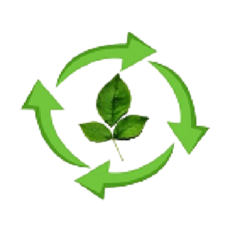

Advancing Recycling. Preserving Tomorrow.
MRA International Limited is one of Jamaica's trusted recycling and export companies, specializing in the collection, processing, and global export of paper, metal, and plastic recyclables. We are committed to promoting environmental sustainability while providing reliable, high-quality materials to our international partners.
MRA International Limited is committed to improving the quality of the environment by managing its resources at maximum efficiency at international standard of quality. The company will seek to grow by increasing its market share by conducting research to meet consumer demands. This effort will be accompanied by increases in procurement, improvement in revenues and reduction in cost.
MRA International Limited is determined to procure high value, high quality recyclable and alternative products to grow into an integrated alternative producer with backward and forward industrial linkages as well as deepening its involvement in the recycling industry.
We collect and process a wide range of paper grades, ensuring they meet export-quality standards. Types of Paper:
MRA International handles both ferrous and non-ferrous metals for recycling and export.
We process various grades of plastics for reuse and export, supporting a cleaner and more sustainable Jamaica.
At MRA International Limited, we believe that recycling is more than just a business—it's a responsibility. By partnering with communities, businesses, and global buyers, we help reduce waste, preserve natural resources, and contribute to a cleaner, greener future for Jamaica and the world.
Mukesh Singh, founder and Chief Executive Officer of MRA International Limited, has dedicated his career to environmental conservation. With over 15 years of experience, Mukesh leads the company with passion, vision, and a commitment to sustainable change worldwide.
Email: mukesh@mraintltd.com
Phone: +1 (876) 391-6676; +1 (876) 648-6291
Address: 3A Haughton Avenue, Kingston, Jamaica, W.I